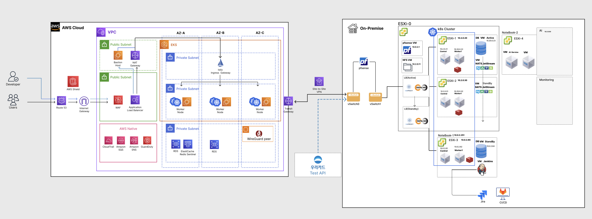

AWS EKS와 온프레미스 VMware/Kubernetes를 연결하고, 서비스별 MSA를 분리해 운영하는 하이브리드 클라우드 프로젝트
단순 지출 기록을 넘어 소비 데이터를 시각적인 금융 피드로 전환하고, 사용자 간 공유와 피드백을 통해 금융 생활 관리의 진입 장벽을 낮추는 서비스를 목표로 합니다.
월별 소비 리포트와 사용자 조건 기반 추천을 통해 청년 정책, 복지, 카드, 보험 등 흩어진 금융 정보를 한곳에서 탐색할 수 있도록 설계했습니다.
Auth, AI Recommend, API Connector, Budget, Alarm, Social 서비스를 분리하고 각 서비스가 자신의 DB를 소유하도록 설계해 배포와 장애 범위를 독립적으로 관리합니다.
온프레미스에는 알림 서비스, 관리자용 대시보드 페이지, 외부 API 수집 컴포넌트를 배치하고, Gateway, Config, Auth, Feed/Social, Budget, AI Recommend 등 나머지 서비스는 클라우드 영역에서 운영하는 구조로 설계했습니다.
AWS EKS와 온프레미스 VMware ESXi 기반 Kubernetes를 Site-to-Site VPN으로 연결한 하이브리드 클라우드 아키텍처

외부 트래픽은 Route 53, AWS Shield, WAF, ALB를 거쳐 EKS 서비스로 진입하고, 내부 서비스는 온프레미스 Kubernetes와 VPN으로 연동됩니다. 사용자 트래픽을 직접 받는 주요 서비스는 클라우드에 두고, 온프레미스에는 알림 서비스, 관리자 대시보드, 외부 API 수집 기능을 배치해 내부 운영성·외부 연계·서비스 확장성을 함께 검토했습니다.
Gateway, Config, Auth, Feed/Social, Budget, AI Recommend 등 사용자 요청 처리와 핵심 비즈니스 로직을 담당하는 서비스는 AWS EKS에 배치합니다. WAF, ALB, EKS, RDS, ElastiCache, SQS/SNS 같은 관리형 서비스를 활용해 가용성과 운영 부담을 함께 고려했습니다.
알림 서비스, 관리자용 대시보드 페이지, 외부 API 수집 컴포넌트는 온프레미스 Kubernetes에 둡니다. 외부 API 연동과 내부 운영 도구를 분리해 관리하고, pfSense와 WireGuard를 통해 접근 경로를 통제하는 구조로 설계했습니다.
서비스 간 직접 DB 접근을 피하고 각 서비스가 자신의 데이터를 소유하도록 분리했습니다. 서비스 간 데이터 교환은 API 호출과 이벤트 흐름으로 제한해 결합도를 낮추는 방향으로 설계했습니다.
각 서비스가 다른 서비스의 테이블을 직접 조회하지 않도록, 필요한 데이터만 서비스별 읽기 모델로 복제해 보관하는 구조를 적용했습니다. 원천 데이터 변경은 SQS와 NATS JetStream 이벤트로 전파하고, 구독 서비스가 자신의 복제 DB를 비동기로 갱신해 서비스 간 결합도를 낮췄습니다.
AWS와 온프레미스 환경 사이의 통신 경로를 VPN으로 제한하고, 클라우드 서비스와 온프레미스 운영성 서비스의 책임을 분리했습니다. 장애가 한쪽 환경에 머물도록 배치하면서도 필요한 이벤트와 API 호출은 명확한 경로로만 오가도록 설계했습니다.
pfSense Peer에 클라이언트 공개키가 아닌 pfSense 공개키가 중복 등록되어 WireGuard 핸드셰이크가 성립하지 않았습니다. 이후 터널 대역과 내부망 대역이 섞이며 트래픽이 물리 어댑터로 새는 문제가 발생해, 터널 대역을 172.16.0.0/24로 분리하고 AllowedIPs를 재정의해 내부망 접근 경로를 WireGuard로 고정했습니다.
과거 테스트용 정적 라우팅 레코드가 남아 WireGuard 트래픽이 LAN 인터페이스까지 도달하지 못하고 내부 라우팅 루프에서 드롭되었습니다. 잘못된 Static Route를 제거하고, 터널 대역에서 내부 LAN으로 나가는 트래픽은 pfSense LAN IP로 SNAT되도록 Outbound NAT를 구성해 ESXi의 리턴 패킷 경로를 안정화했습니다.
WireGuard에서 pfSense OPT1을 거쳐 10.0.2.x VM으로 SSH 접속할 때 Windows 클라이언트에서만 MAC 검증 오류와 Bad packet length가 발생했습니다. Packet Capture와 ssh -vvv로 경로 차이를 확인했고, LAN 대역 Jump Host를 통해 OPT1 NAT 경로를 우회하는 방식으로 팀원 접속을 복구했습니다.
kubeadm init 시 control-plane-endpoint와 upload-certs 옵션이 누락되고, hostname 미설정, 서브넷 마스크 오설정, Kubernetes 버전 불일치가 겹치며 etcd health check와 control-plane join이 실패했습니다. 클러스터를 reset한 뒤 HA 필수 옵션을 포함해 재구성하고, hostname/IP/버전/서브넷을 통일해 control-plane과 worker join을 정상화했습니다.